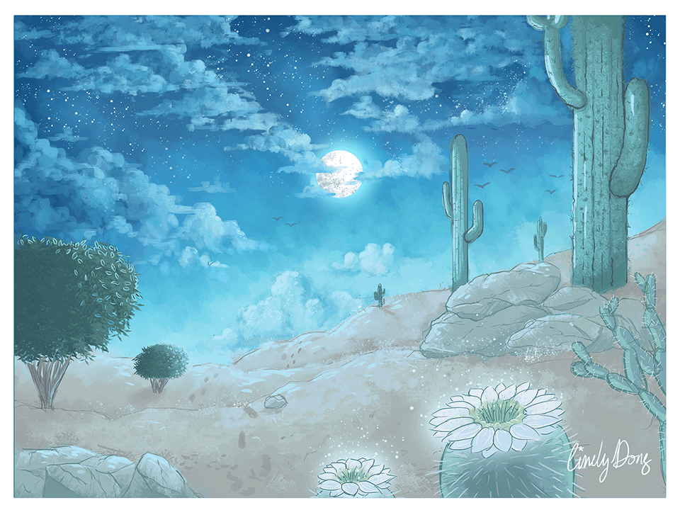

National Parks Around the World Series (2021)
The objective behind this project series is to illustrate National Parks around the world in ways that emphasize their unique natural attraction through composition, contrast, value, and color scheme. The purpose is to highlight the reason these places are known as the world’s natural heritage sites.
Over time, the series expanded in a direction where animations were created to further place emphasis on the natural attraction of these places
Saguaro National Park
Arizona, USA
